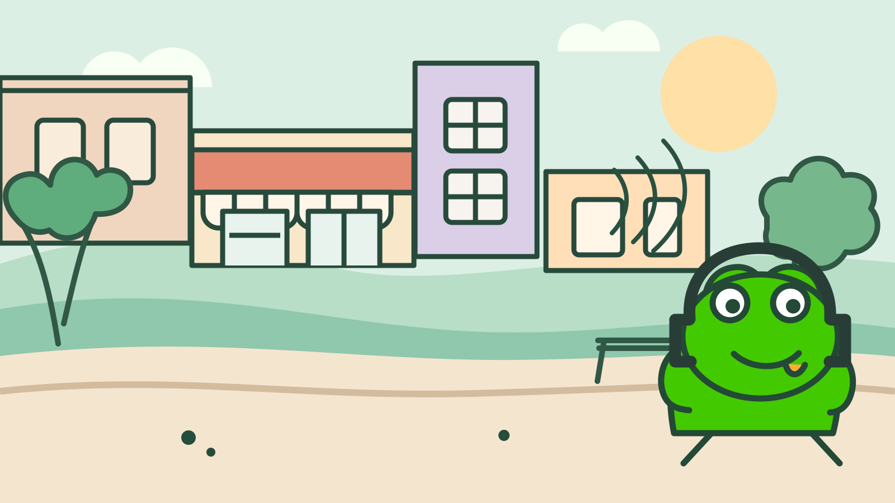

选一段视频
粘贴喜欢的 YouTube 视频链接，选择实际语言和画质。
为爱看视频，也想真正听懂的人设计
从喜欢的 Vlog 开始，听真实的人怎么说。
LineLoop 帮你整理句子、跟随单词，再按你的节奏反复播放。

VIDEO 01 · CITY VLOGI usually take the long way home.
The street gets quiet after sunset.
I usually take the long way home.
我通常会绕远路回家。There is a little café on the corner.
交互示意 · 点击播放可预览单词跟随，页面本身不播放音频
听力终于有了自己的节奏
无需追着整段视频跑。选一句、听原声、看译文，再回到原声。
直到熟悉的画面里，每个词都开始清晰。
01 / LOOP YOUR WAY
原声和中文怎么交替、各听几次，都由你来定。想听清一个短语，还能缩小循环区间，慢慢听，反复听。
YOUR LISTENING FLOW
“I usually take the long way home.”
先听视频里的真实声音，试着捕捉熟悉的词。
可自定义顺序、次数、语速与区间I usually take the
long way home.
02 / FOLLOW EVERY WORD
读到哪个词，字幕就亮到哪里。自动切句有偏差？直接拖动时间标记，看着波形微调，让下一遍刚好从你要的地方开始。
03 / KEEP THE MOMENTUM
从今天看的 Vlog 到上周的访谈，已导入的视频都在你的资料库。随时切换，接着上次那一句继续。
开始很简单
粘贴喜欢的 YouTube 视频链接，选择实际语言和画质。
LineLoop 整理句子与中文译文；时间不准时，你可以自己调整。
设置播放顺序与次数，循环想听清的句子或片段。
你可能想知道
不需要。安装包已经包含视频处理工具和本机语音识别模型。将 LineLoop 拖入“应用程序”即可打开。
目前支持英语、西班牙语、法语、德语和俄语视频。中文翻译使用 macOS 的系统能力，首次使用某些语言时，系统可能需要下载语言资源。
可以。你可以修改句子文字和起止时间，并用波形与缩放工具精细调整播放区间。
LINELOOP FOR MAC
下载后拖入“应用程序”，就可以把喜欢的视频变成自己的语言练习。
下载 LineLoop 1.21.3 Apple 芯片 · macOS 15 或更新版本